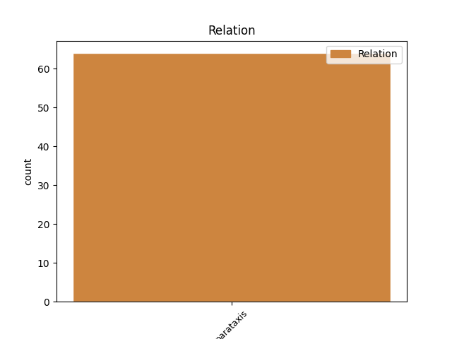
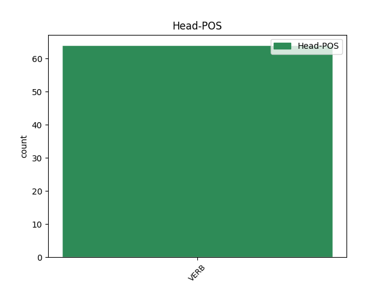
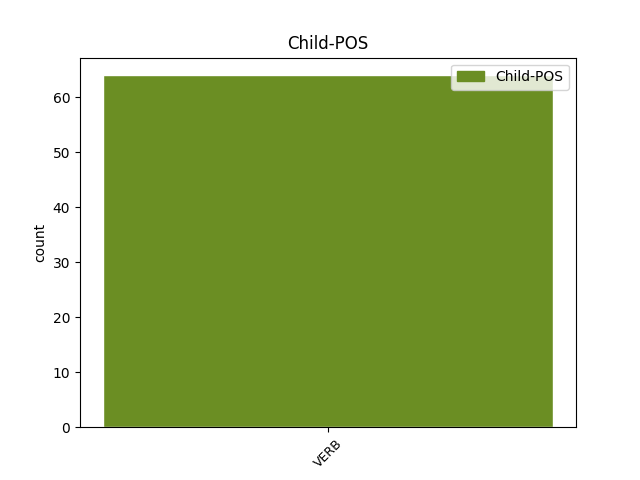

Distribution of features within this leaf



Agreement Rules sorted by frequency.
- When the dependent token is the parataxis(parataxis) of the head token,
1 Cha _ _ _ _ 0 _ _ _
2 deach rach VERB V-s--d Tense=Past 0 _ _ _
3 “ _ _ _ _ 0 _ _ _
4 mo _ _ _ _ 0 _ _ _
5 thogail _ _ _ _ 0 _ _ _
6 is _ _ _ _ 0 _ _ _
7 m’ _ _ _ _ 0 _ _ _
8 àrach _ _ _ _ 0 _ _ _
9 ann _ _ _ _ 0 _ _ _
10 am _ _ _ _ 0 _ _ _
11 fàsaichean _ _ _ _ 0 _ _ _
12 Uibhist _ _ _ _ 0 _ _ _
13 " _ _ _ _ 0 _ _ _
14 , _ _ _ _ 0 _ _ _
15 chaidh rach VERB V-s Tense=Past 2 parataxis _ _
16 mo _ _ _ _ 0 _ _ _
17 thogail _ _ _ _ 0 _ _ _
18 is _ _ _ _ 0 _ _ _
19 m’ _ _ _ _ 0 _ _ _
20 àrach _ _ _ _ 0 _ _ _
21 ann _ _ _ _ 0 _ _ _
22 am _ _ _ _ 0 _ _ _
23 fàsaichean _ _ _ _ 0 _ _ _
24 Ghlaschu _ _ _ _ 0 _ _ _
25 . _ _ _ _ 0 _ _ _
Disagree Examples:
1 Nuair _ _ _ _ 0 _ _ _
2 a _ _ _ _ 0 _ _ _
3 thàinig _ _ _ _ 0 _ _ _
4 an _ _ _ _ 0 _ _ _
5 eachdraidh _ _ _ _ 0 _ _ _
6 gu _ _ _ _ 0 _ _ _
7 ceann _ _ _ _ 0 _ _ _
8 , _ _ _ _ 0 _ _ _
9 chuir _ _ _ _ 0 _ _ _
10 i _ _ _ _ 0 _ _ _
11 a _ _ _ _ 0 _ _ _
12 dà _ _ _ _ 0 _ _ _
13 bhois _ _ _ _ 0 _ _ _
14 bhuig _ _ _ _ 0 _ _ _
15 ri _ _ _ _ 0 _ _ _
16 chèile _ _ _ _ 0 _ _ _
17 mar _ _ _ _ 0 _ _ _
18 gu _ _ _ _ 0 _ _ _
19 robh _ _ _ _ 0 _ _ _
20 i _ _ _ _ 0 _ _ _
21 ag _ _ _ _ 0 _ _ _
22 ùrnaigh _ _ _ _ 0 _ _ _
23 is _ _ _ _ 0 _ _ _
24 thuirt abair VERB V-s Tense=Past 0 _ _ _
25 i _ _ _ _ 0 _ _ _
26 , _ _ _ _ 0 _ _ _
27 " _ _ _ _ 0 _ _ _
28 Tha bi VERB V-p Tense=Pres 24 parataxis _ _
29 a' _ _ _ _ 0 _ _ _
30 ghealach _ _ _ _ 0 _ _ _
31 slàn _ _ _ _ 0 _ _ _
32 an _ _ _ _ 0 _ _ _
33 ath-oidhch' _ _ _ _ 0 _ _ _
34 . _ _ _ _ 0 _ _ _
1 " _ _ _ _ 0 _ _ _
2 Tha bi VERB V-p Tense=Pres 0 _ _ _
3 Trianaon _ _ _ _ 0 _ _ _
4 dusan _ _ _ _ 0 _ _ _
5 mìle _ _ _ _ 0 _ _ _
6 às _ _ _ _ 0 _ _ _
7 a _ _ _ _ 0 _ _ _
8 seo _ _ _ _ 0 _ _ _
9 , _ _ _ _ 0 _ _ _
10 " _ _ _ _ 0 _ _ _
11 thuirt abair VERB V-s Tense=Past 2 parataxis _ _
12 Iain _ _ _ _ 0 _ _ _
13 gu _ _ _ _ 0 _ _ _
14 fuar _ _ _ _ 0 _ _ _
15 . _ _ _ _ 0 _ _ _
1 " _ _ _ _ 0 _ _ _
2 Tha _ _ _ _ 0 _ _ _
3 , _ _ _ _ 0 _ _ _
4 ma _ _ _ _ 0 _ _ _
5 ghabhas ghabh VERB V-f--r Tense=Fut 0 _ _ _
6 tu _ _ _ _ 0 _ _ _
7 an _ _ _ _ 0 _ _ _
8 rathad _ _ _ _ 0 _ _ _
9 mòr _ _ _ _ 0 _ _ _
10 , _ _ _ _ 0 _ _ _
11 " _ _ _ _ 0 _ _ _
12 dh'aontaich aontaich VERB V-s Tense=Past 5 parataxis _ _
13 Tormod _ _ _ _ 0 _ _ _
14 . _ _ _ _ 0 _ _ _
1 " _ _ _ _ 0 _ _ _
2 Tha bi VERB V-p Tense=Pres 0 _ _ _
3 eich _ _ _ _ 0 _ _ _
4 agadsa _ _ _ _ 0 _ _ _
5 ? _ _ _ _ 0 _ _ _
6 " _ _ _ _ 0 _ _ _
7 ars arsa VERB V-s Tense=Past 2 parataxis _ _
8 Iain _ _ _ _ 0 _ _ _
9 . _ _ _ _ 0 _ _ _
1 Chaidh rach VERB V-s Tense=Past 0 _ _ _
2 seachdain _ _ _ _ 0 _ _ _
3 seachad _ _ _ _ 0 _ _ _
4 mun _ _ _ _ 0 _ _ _
5 do _ _ _ _ 0 _ _ _
6 choinnich _ _ _ _ 0 _ _ _
7 na _ _ _ _ 0 _ _ _
8 fir _ _ _ _ 0 _ _ _
9 a-rithist _ _ _ _ 0 _ _ _
10 , _ _ _ _ 0 _ _ _
11 is _ _ _ _ 0 _ _ _
12 cha _ _ _ _ 0 _ _ _
13 robh _ _ _ _ 0 _ _ _
14 guth _ _ _ _ 0 _ _ _
15 air _ _ _ _ 0 _ _ _
16 tachartas _ _ _ _ 0 _ _ _
17 na _ _ _ _ 0 _ _ _
18 h-oidhche _ _ _ _ 0 _ _ _
19 ud _ _ _ _ 0 _ _ _
20 gus _ _ _ _ 0 _ _ _
21 an _ _ _ _ 0 _ _ _
22 duirt _ _ _ _ 0 _ _ _
23 Tormod _ _ _ _ 0 _ _ _
24 às _ _ _ _ 0 _ _ _
25 a' _ _ _ _ 0 _ _ _
26 ghuth-thàmh _ _ _ _ 0 _ _ _
27 , _ _ _ _ 0 _ _ _
28 " _ _ _ _ 0 _ _ _
29 Tha bi VERB V-p Tense=Pres 1 parataxis _ _
30 mi _ _ _ _ 0 _ _ _
31 'm _ _ _ _ 0 _ _ _
32 beachd _ _ _ _ 0 _ _ _
33 gun _ _ _ _ 0 _ _ _
34 d' _ _ _ _ 0 _ _ _
35 fhàg _ _ _ _ 0 _ _ _
36 an _ _ _ _ 0 _ _ _
37 fheadhainn _ _ _ _ 0 _ _ _
38 ud _ _ _ _ 0 _ _ _
39 an _ _ _ _ 0 _ _ _
40 sgìre _ _ _ _ 0 _ _ _
41 . _ _ _ _ 0 _ _ _
42 " _ _ _ _ 0 _ _ _